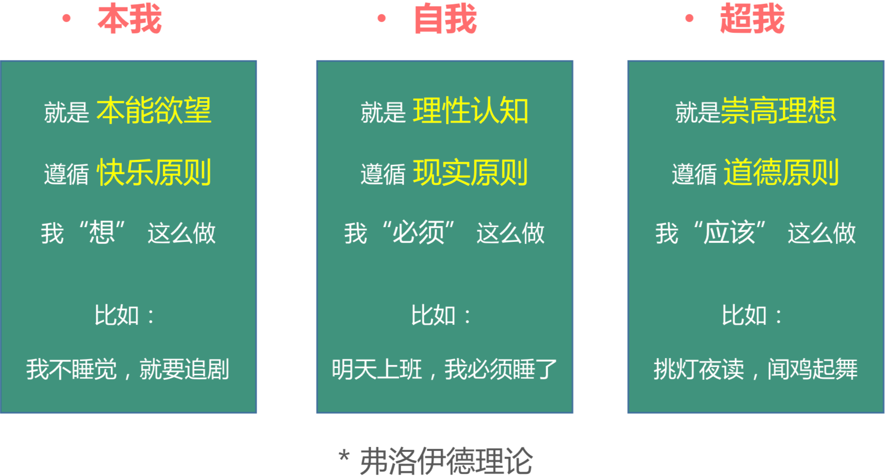

需求的收集 分析与提炼
影子:“产品的本质是用户需求”，那用户需求的本质又是什么呢?

1、用户需求的本质
需求的本质是 欲望，表现为名望、权利、利益等各种内心的渴望。

产品经理最需要了解人的需求
产品经理了解用户的需求后，不仅是满足用户的需求，而是“更”好的满足用户需求。都在一个“更”字上!

1、我想吃饭，但是我不想自己煮饭，也不想出去吃，怎样才能做到不用 煮饭、不用出去也能吃到好吃的饭菜?
产品:饿了么、百度外卖、美团外卖。
2、我想唱K，但是我不想去KTV，我想随时随地唱歌并且能够与不同地 方的人一起合唱，怎样才能做到这样呢?
产品:唱吧、K歌之王、K歌达人、酷狗K歌等。
2、用户需求与产品

阿里指数:马桶刷>马桶 Why?

只有360安全卫士还活着

需求与产品
用户有什么样的需求，产品就需要设计什么样的产品来满足。 产品如何满足用户需求?
主要就是 功能 和 内容 两方面，互联网及移动互联网产品不外乎就是上述两大块。

需求与功能
需求是从用户角度说的，功能是从产品角度说的，用户需求与 产品功能两者是一一对应的关系。
需求与内容
功能满足了用户实现某个任务和目标，而内容则给到用户更多的信息。狭义上的内容只是图文，广义上包含音视频、游戏等。

3、需求的收集与获取

产品经理前期最重要的工作就是需求处理。
实际工作中，需求获取的方法有很多，到底使用哪一种，往往 取决于资源的多少、时间的多少、经费的多少、人手的多少。

外部需求详解
用户访谈
用户访谈属于定性分析，定性分析就 是对需求进行“质”的分析，解决的 是需求存不存在的问题，能够帮我们 找到产品的方向。
* 比如，我们的办公地点一般下了地铁还要走很远的路，通过用户访谈， 我们发现被调查的人有骑单车的需求，这是定性分析。
用户访谈类型

用户访类注意事项

访谈目的:确定访谈目的至关重要，它是我们进行这次访谈的意义所在。但是不 要带有立场，以免诱导用户。
对象选择:最好将对象分组，比如3个轻度用户，3个中度用户，3个中度用户; 或者分年龄段，90后3个，70，80有3个，70之前的3个。
营造氛围:建立信任关系，就像熟人，朋友一样去聆听用户的心声。 有张有弛:开始问一些用户感兴趣的内容，同时给予用户积极的响应和反馈，然后将用户引入更加深层次的问题;
及时记录:一个人专门记录，最好录音，这些都是后期需求评估的重要依据。

调查问卷
调查问卷属于定量分析，定量分析使定性分析更加科学、准确，防止 以偏概全。以封闭式问题为主。问卷分析时需要掐头去尾，过滤无效 问卷后再进行。
人物访谈我们发现用户有骑单车的需求，通过调查问卷，我们发现，95%的人有骑单车的需求， 这就是定量分析。
问卷设计时的策略:
1、在用户访谈后，我们有了一定想法，带着目的设计问卷;
2、封闭式的问题、不要诱导用户;题目表述明确无歧义、不要有专业词汇;
3、不要超过20个题目、5分钟之内完成、多选择题、少填空题、问题由浅 入深，有逻辑性、避免让用户思考。
问卷投放时的方法:
1、利用第三方问卷工具(微信公众号)制作调查问卷，比如问卷星、腾讯问卷，然 后将问卷链接发到QQ群、微信群等。
2、应用内留调查问卷的入口，H5页面
3、线下投放(找到目标用户)
竞品分析
通过研究竞品了解竞品的最新动态，看看是否需要跟进;从竞品的功能、模块设计、思考竞品如此设计的出发点，找到竞品的闪光点
行业动态
政策变化、业内信息、市场环境、行业报告等;可通过易观智库、 艾瑞咨询、百度指数、Questmobile等。
用户反馈
某些产品会通过意见反馈功能收集信息，除此之外，有些用户会给客服反馈一些意见。这些都是用户反馈的直接渠道。对于用户提出的意见，我们需甄别后加以取舍。
第三方合作需求
常见于软件外包公司，一般为业务方需求; 也包括平台类的产品， 需要外部资源而借以实现的功能。
内部需求详解

公司的需求
1、领导的需求(从战略角度、融资角度、产品数据) ; 2、客服、运营、销售的需求。
数据分析
数据分析属于定量分析，我们可以通过分析用户的行为来分析用户的 需求。我们分析用户进入产品的入口页面、出口页面，各个功能模块 的使用频率，如电商页面的转化率、转化、漏斗。

用户画像
用户画像也称人物角色，是根据用户社会属性、生活习惯和消费行为等信息而抽象出的一个标签化的用户模型。通过用户画像，挖掘用户属性，给用户打标签，从而发现核心用户的需求。用户画像一般设置3-5个即可，以免用户之间发生冲突。 目的是发现 主要、次要、潜在用户。


租房产品用户画像案例
产品经验之5W1H法则
5W1H法
通过5W1H罗列不同的用户场景，不同场景下，用户会用怎么样的 操作或者有怎么思考?罗列不同场景，一件一件的摆事实，从事实 中分析、推敲用户的使用习惯和真实需求。

1. WHAT —— 用户目标是什么?产品目标是什么?企业目标是什么?
2. WHO —— 谁是用户?谁是目标用户?他们有什么特征属性?
3. WHY —— 为什么?为什么要这么做?理由何在?原因是什么?
4. WHEN —— 用户在什么时候会用?使用的场景处于什么时间段。
5. WHERE—— 用户在哪里使用?使用场景所处的位置，如公交地铁、办公室、 户外等。
6. HOW —— 怎么做?如何提高效率?如何实施?方法怎样?用户会怎样使用?

案例一
比如20-30之间的互联网从业女性(who)，晚上9点半(when) 下班回到家(where)，洗完澡做在床上。一天工作很劳累、工 作节奏快压力大(why)，想放松一下精神(what),这会他打开手 机优酷想看最近的热播剧，但是她考虑到看电视剧会上瘾，于是 打开今日头条，播放起头条上的短视频(how)。
案例二
比如一名35岁左右的孕妇(who)，下午2点半(when)闲赋在家 (where)感觉无趣，想去找离自己20公里的闺蜜聊天(what), 他本想打滴滴去稍微便宜一些，但是考虑到车内环境和安全(why)， 最后还是选择了神州租车(how) 。
4、需求的分析与提炼
需求的分析
将获取到的需求筛选、过滤，从各个方面考量研究。 用户的需求千奇百怪，1000个人就有1000个哈姆雷特，我们永远无法满足所有的人的需求，做的多就会丧失易用性;二八原则。 用户饿了:有人想吃包子、饺子、面条、西餐、盖饭、汉堡
需求分析考虑因素
用户的需求，是核心需求还是爽点，
重要紧急度; 企业的战略，是盈利还是做用户;
产品的定位，是做熟人社交还是陌生人社交;
创新性考虑，是否有差异化;
技术可行性，技术上是否能实现;
成本的考虑，成本是否能承受;
商业风险、政策风险。
需求的评估方法
1、KANO模型 2、四象限法则 3、交集分析法 4、学会做减法

KANO模型

KANO模型案例
四象性法则
国美的例子
2级:新增支付接口
3级:新手帮助的错误描述
交集分析法
可做的:根据形势判断，哪个市场还有蛋糕可分; 以及自身能力和专长决定可以做什么。
想做的:结合公司定位、企业愿景，决定想做什么， 比如京东战略定位绝不会是社交领域。
学会做减法
需求的提炼(确认优先级)
需求经过分析和评估后，产品经理要将需求要形成优先级，对于 即将要设计的产品需求，组织会议让整个团队基本上达成共识。
最后在需求池或功能list(列表)里面标注好需求的优先级。
需求池的作用
1、收集、整理各部门的需求; 2、对需求进行整体的管理; 3、定义需求优先级，避免需求插队。